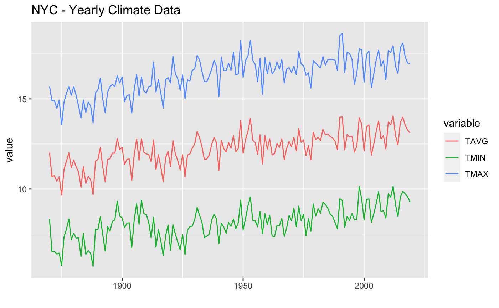
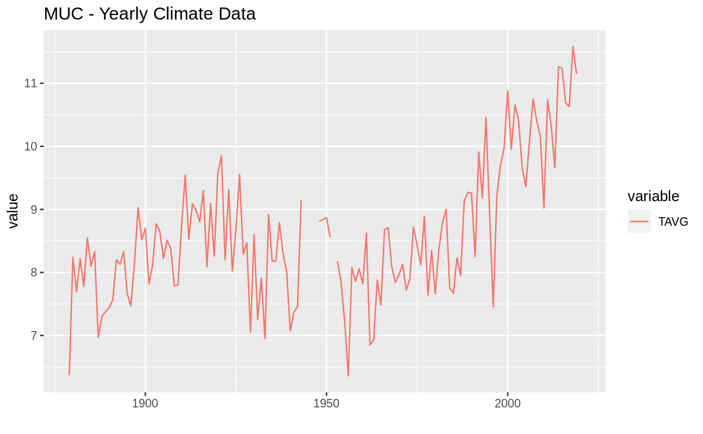
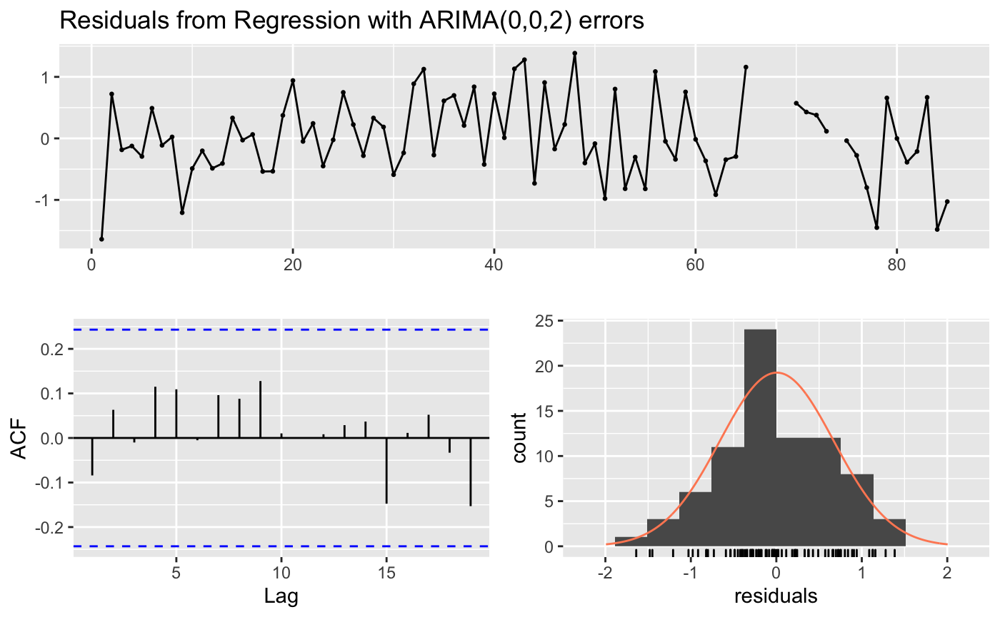
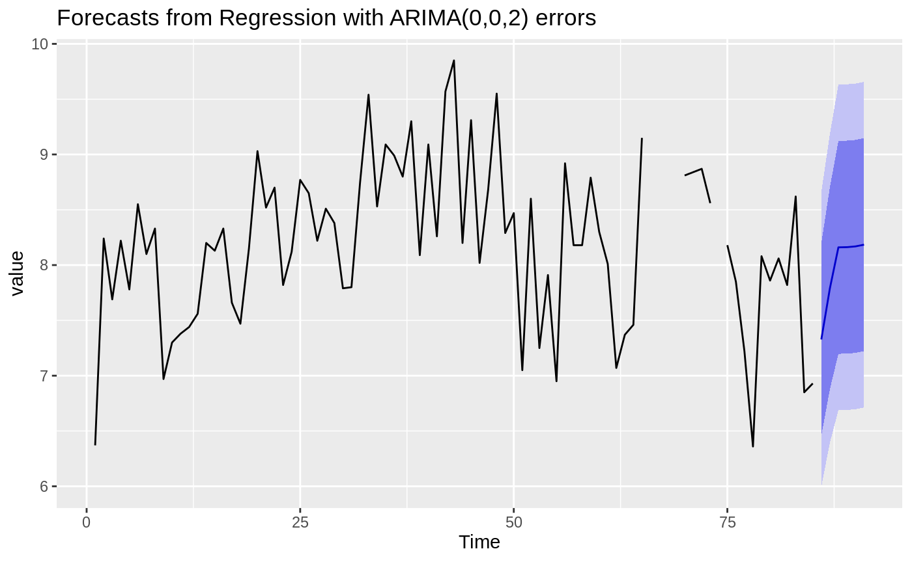

Load and prepare data
library(mlr3forecasting)
## Registered S3 method overwritten by 'quantmod':
## method from
## as.zoo.data.frame zoolibrary(mlr3) library(ggplot2) library(forecast) # National Centers for Environmental Information, National Oceanic and Atmospheric Administration muc = read.csv("https://www.ncei.noaa.gov/data/global-summary-of-the-year/access/GM000004199.csv") nyc = read.csv("https://www.ncei.noaa.gov/data/global-summary-of-the-year/access/USW00094728.csv") muc = muc[, c("DATE", "PRCP", "TAVG", "TMIN", "TMAX")] nyc = nyc[, c("DATE", "PRCP", "TAVG", "TMIN", "TMAX")] nyc[is.na(nyc$TAVG),]
## DATE PRCP TAVG TMIN TMAX
## 1 1869 1149.9 NA NA NA
## 152 2020 NA NA NA NA# remove first year nyc = nyc[-1,] muc_start <- muc$DATE[1] muc_end <- muc$DATE[nrow(muc)] nyc_start <- nyc$DATE[1] nyc_end <- nyc$DATE[nrow(nyc)] #nyc check missing all_years = nyc_start:nyc_end missing_years = setdiff(all_years, nyc$DATE) #add missing years all_years = muc_start:muc_end missing_years = setdiff(all_years, muc$DATE) missing_years_df = data.frame(DATE = missing_years, PRCP = NA, TAVG = NA, TMIN = NA, TMAX = NA) muc = rbind(muc, missing_years_df) muc = muc[order(muc$DATE),] head(muc)
## DATE PRCP TAVG TMIN TMAX
## 1 1879 864.7 6.37 2.10 10.64
## 2 1880 1172.7 8.24 3.96 12.52
## 3 1881 813.5 7.69 3.32 12.06
## 4 1882 982.6 8.22 3.80 12.63
## 5 1883 887.4 7.78 3.63 11.94
## 6 1884 801.9 8.55 4.23 12.87Generate Task
task = TaskRegrForecast$new(id = "nyc", backend = nyc_ts, target = c("TAVG", "TMIN", "TMAX")) task$print()
## <TaskRegrForecast:nyc> (151 x 4)
## * Target: TAVG, TMIN, TMAX
## * Properties: multivariate
## * Features (1):
## - dbl (1): PRCPLearner
learner = LearnerRegrForecastVAR$new() learner$train(task, row_ids = 1:140) learner$model
##
## VAR Estimation Results:
## =======================
##
## Estimated coefficients for equation TAVG:
## =========================================
## Call:
## TAVG = TAVG.l1 + TMIN.l1 + TMAX.l1 + const + PRCP
##
## TAVG.l1 TMIN.l1 TMAX.l1 const PRCP
## 4.0771421122 -1.8509164028 -1.7015792696 4.7167644305 0.0003791629
##
##
## Estimated coefficients for equation TMIN:
## =========================================
## Call:
## TMIN = TAVG.l1 + TMIN.l1 + TMAX.l1 + const + PRCP
##
## TAVG.l1 TMIN.l1 TMAX.l1 const PRCP
## 14.9032339288 -6.9015015629 -7.4926644859 3.6618636553 0.0005266401
##
##
## Estimated coefficients for equation TMAX:
## =========================================
## Call:
## TMAX = TAVG.l1 + TMIN.l1 + TMAX.l1 + const + PRCP
##
## TAVG.l1 TMIN.l1 TMAX.l1 const PRCP
## -6.681064783 3.165766819 4.054795062 5.780513431 0.000233528Predict
p = learner$predict(task, row_ids = 141:150) p$response
## row_id TAVG TMIN TMAX
## 1: 141 12.18238 8.278473 16.08544
## 2: 142 12.39421 8.536479 16.25221
## 3: 143 12.16620 8.204436 16.12647
## 4: 144 12.14030 8.144487 16.13512
## 5: 145 12.20270 8.207059 16.19768
## 6: 146 12.11141 8.065036 16.15647
## 7: 147 12.08404 8.009921 16.15695
## 8: 148 12.10114 8.016975 16.18420
## 9: 149 12.30878 8.292957 16.32444
## 10: 150 12.28554 8.264854 16.30535p$se
## [1] NA NA NA NA NA NA NA NA NA NARolling Window CV
rr = rsmp("RollingWindowCV", fixed_window = F) rr$instantiate(task) resample = resample(task, learner, rr, store_models = TRUE) resample$predictions()[1:2]
## [[1]]
## <PredictionForecast> for 5 observations:
## row_id truth.TAVG truth.TMIN truth.TMAX response.TAVG response.TMIN
## 39 12.79 9.36 16.21 11.71324 7.976753
## 40 12.04 8.63 15.45 11.50264 7.716682
## 41 11.95 8.58 15.33 11.39142 7.495746
## 42 11.91 8.15 15.68 11.24468 7.431729
## 43 11.51 7.28 15.73 11.29723 7.491780
## response.TMAX
## 15.45116
## 15.28692
## 15.28563
## 15.05668
## 15.10176
##
## [[2]]
## <PredictionForecast> for 5 observations:
## row_id truth.TAVG truth.TMIN truth.TMAX response.TAVG response.TMIN
## 41 11.95 8.58 15.33 12.07808 8.444829
## 42 11.91 8.15 15.68 11.75553 8.108603
## 43 11.51 7.28 15.73 11.65792 7.970875
## 44 12.73 8.42 17.05 11.54692 7.929194
## 45 11.08 6.77 15.39 11.65997 7.943193
## response.TMAX
## 15.70890
## 15.40181
## 15.34375
## 15.16478
## 15.37492Plotting
## Warning: Removed 3 row(s) containing missing values (geom_path).
task = TaskRegrForecast$new(id = "muc", backend = ts(muc[c("TAVG", "PRCP")], start = muc_start, end = muc_end, frequency = 1), target = "TAVG") autoplot(task) + ggtitle("MUC - Yearly Climate Data")

learner = LearnerRegrForecastAutoArima$new() learner$train(task, row_ids = 1:85) learner$model
## Series: task$data(rows = task$row_ids, cols = task$target_names)
## Regression with ARIMA(0,0,2) errors
##
## Coefficients:
## ma1 ma2 intercept PRCP
## 0.3129 0.3529 8.3595 -2e-04
## s.e. 0.1208 0.1113 0.5113 5e-04
##
## sigma^2 estimated as 0.4615: log likelihood=-80.94
## AIC=171.88 AICc=172.64 BIC=184.1p = learner$predict(task, row_ids = 86:136) p$se
## [1] NA NA NA NA NA NA NA NA NA NA NA NA NA NA NA NA NA NA NA NA NA NA NA NA NA
## [26] NA NA NA NA NA NA NA NA NA NA NA NA NA NA NA NA NA NA NA NA NA NA NA NA NA
## [51] NAcheckresiduals(learner$model)

##
## Ljung-Box test
##
## data: Residuals from Regression with ARIMA(0,0,2) errors
## Q* = 4.9348, df = 6, p-value = 0.5522
##
## Model df: 4. Total lags used: 10autoplot(forecast(learner$model, xreg = as.matrix(task$data(cols = "PRCP", rows = 131:136 )))) + ylab("value")
